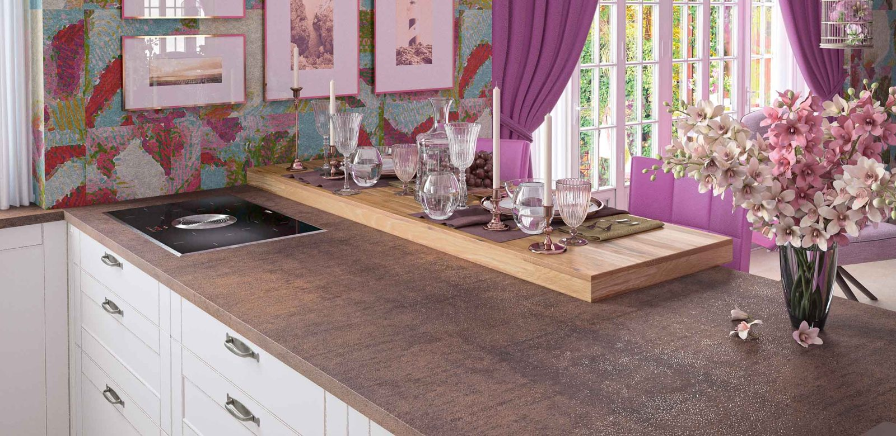
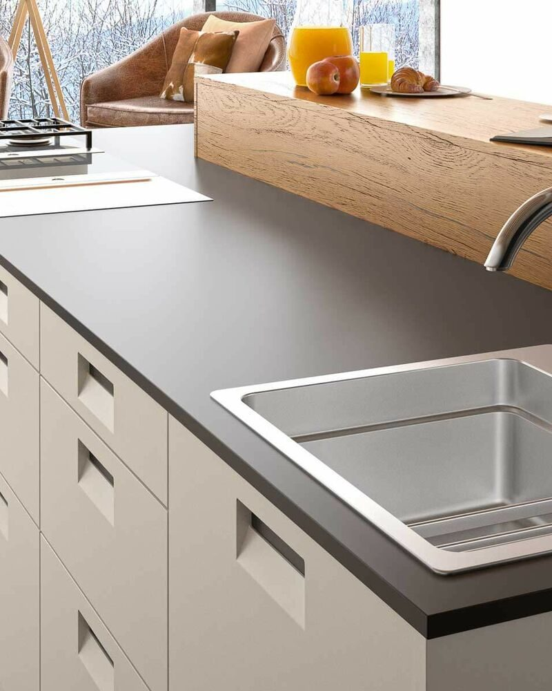
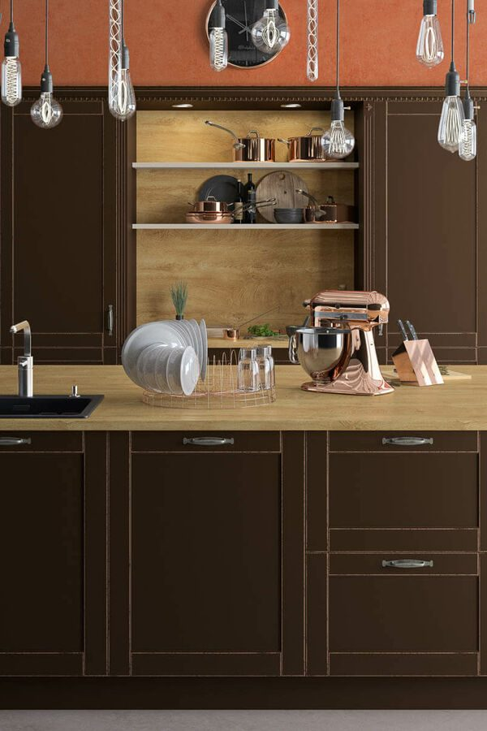
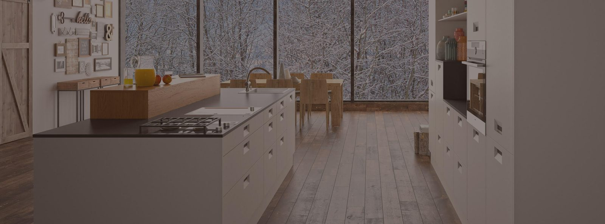

Küchen nach Maß
Küchenplanung mit Wohnstudio Wurz
Im Wohn- und Küchenstudio Wurz in Sankt Valentin wird Küchenplanung mit viel Erfahrung und individueller Beratung angegangen. Wenn Sie im Großraum Linz, Enns, Steyr oder Perg leben und eine neue Küche kaufen wollen, lohnt sich ein Beratungsgespräch – wir planen Traumküchen im Bewusstsein, wie wichtig diese Investition ist.

Individuelle Traumküche statt Standardlösung
Kein Kunde ist wie der andere – und genauso ist es mit Küchen von Thomas Wurz. Ob offene Wohnküche mit Kücheninsel oder maßgefertigte Lösung für eine kleine Küche: Über die Gestaltung entscheidet nicht nur das Raumangebot, sondern vor allem Ihr Alltag.
- Welche Ansprüche haben Sie ans Kochen?
- Diese Frage hat großen Einfluss auf die Wahl der richtigen Einbaugeräte sowie auf Größe und Anordnung von Arbeitsflächen und Ablagen.
- Wie viel Stauraum benötigen Sie?
- Ausziehschränke, große Hochschränke oder Hängeschränke? Haushaltsgröße und die Frage, ob Sie häufig Gäste bewirten, sind dafür entscheidend.
- Welche Designvorstellungen haben Sie?
- Wir schlagen kein Standard-Design vor, das minimal angepasst wird, sondern erstellen ein eigenständiges Design mit individueller Formensprache, Küchenfronten, Arbeitsplatten und Materialien.
Tischlermeister und Hobbykoch Thomas Wurz weiß, welche Faktoren entscheidend sind, damit eine Traumküche entsteht, die Sie im Alltag begeistert.
HAKA-Küchen im Wohnstudio Wurz
Als HAKA-Markenpartner planen wir individuelle Küchen mit dem Küchensystem des österreichischen Premium-Küchenbauers HAKA. Überzeugt haben uns als Profis:
- Maximum an individueller Gestaltung
- Qualität aus Österreich bei Bauteilen und Beschlägen
- COOKpit-Planung für optimale Arbeitsabläufe
- HAKA-Küchen werden maßgetischlert
- Fertigung in 9 Tagen ermöglicht schnelle Lieferzeiten
Die vielen Stilrichtungen im HAKA-Angebot ermöglichen die Umsetzung persönlicher Küchen-Visionen: Gemütliche Landhausküchen sind ebenso umsetzbar wie cleane Küchendesigns mit pudrigen Oberflächen und hochwertigen Steinarbeitsplatten.
Für den exklusiven Touch der Extraklasse veredelt Tischlermeister Thomas Wurz HAKA-Küchen mit besonderen Materialien wie Keramik, Stein oder Glas.


Die Tischlerküche aus Kaltenberg
Manche Kunden wünschen sich eine komplette Tischlerküche, die vom Korpus bis zu den Küchenfronten in unserer Tischlerei maßgefertigt wird. Neben heimischen Hölzern können auch besondere Edelhölzer wie Rosenholz oder Mooreiche eingesetzt werden.
Eine Tischlerküche von Tischlerei Wurz wird für viele Jahrzehnte gefertigt und steht für absolute Perfektion bis ins letzte Detail.
Einbaugeräte von Markenherstellern
Die Wahl der Einbaugeräte hat großen Einfluss auf die Alltagstauglichkeit einer neuen Küche. Neben Herd, Backofen und Kühlschrank betrachtet Thomas Wurz mit Ihnen, ob weitere Geräte wie Dampfgarer, Kombigarer oder Weinkühler in Ihrem Alltag Sinn machen. Eine große Auswahl renommierter Hersteller ermöglicht die Realisierung innerhalb Ihres Budgetrahmens.
- AEG
- Miele
- BORA – Dunstabzüge & Kochfelder
Die Speis als moderne Lagerlösung
Was zu Uromas Zeiten unverzichtbar war, entdecken viele Kunden neu: die Speis als Teil einer modernen Küche. Neben Stau- und Vorratsraum kann sie heute auch als Weinlagerraum konzipiert werden.
Thomas Wurz legt Wert darauf, dass das zusätzliche Platzangebot durch smarte Stauraum-Lösungen optimal genutzt wird. Statt einer klassischen Tür wünschen sich viele Kunden die unsichtbare Integration der Speis: Mit Trockenbau und hohen Küchenfronten ist das problemlos möglich.
Montage
Küchenmontage durch unser Profi-Team
Auch bei der Montage überlassen wir nichts dem Zufall. Unser Team besteht ausschließlich aus erfahrenen Tischlern und Fachpersonal, das Ihre Küche mit Präzision montiert. Termintreue und perfekte Qualität bei der Übergabe sind für uns selbstverständlich und sichern unseren guten Ruf in der Region.
Ob personalisierte HAKA-Küche oder Tischlerküche: Im Wohnstudio Wurz finden wir die passende Lösung für Ihr Zuhause.
